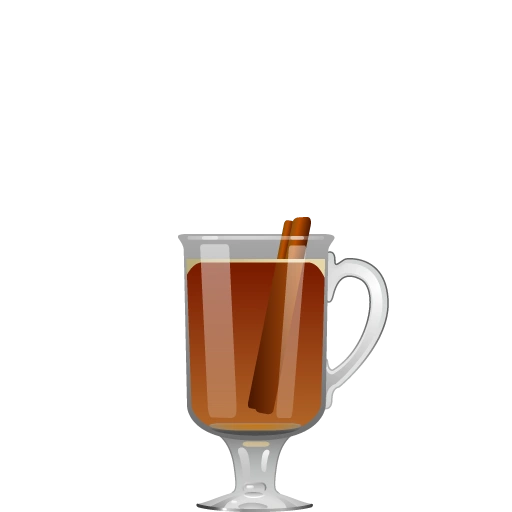
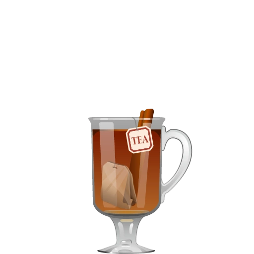

Potential Riffs

Spiced Rum Toddy
Replace whiskey with spiced rum for a sweeter, more aromatic version.

Herbal Toddy
Add a splash of herbal liqueur like Chartreuse or Benedictine for a complex twist.
 Maple Toddy
Maple Toddy
Substitute honey with maple syrup for a rich, warm flavor.